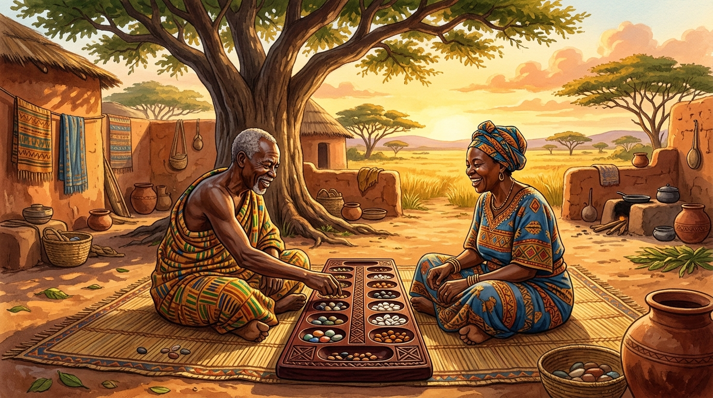

流传 3000 年的非洲与阿拉伯算路古棋 · 零骰子 · 逆时针播种、宝库连击与对坑截胡
尽可能多地把彩色宝石收进己方大宝库（南岸在最右侧，北岸在最左侧）。对局结束时，大宝库宝石总数多者获胜！
当任意一方的 6 个小坑全部清空时，游戏立即结束！另一方将自己这一排剩余的所有宝石全部收入己方大宝库，比拼最终宝石总数。
这是播棋最经典的战略陷阱！ 因为一方清空后，对手那边剩下的所有宝石都会归对手所有！所以不是“谁先播完谁赢”，而是要在己方大宝库已经领先（比如超过 24 颗）时再主动清坑锁胜，否则不要急着把己方全清光把宝石送给对手！
不会！只有当正对面对手小坑里至少有 1 颗宝石时才会触发“对坑截胡”；如果对面也是空的，那颗宝石就老老实实留在己方坑里，轮到对方。
可以！ 因为你抓起原坑全部宝石后，原坑就变空了；绕满一圈（跳过对手大宝库，共 13 步）最后一颗正好落回这个空坑时，如果对面坑有宝石，照样触发华丽的“环游截胡”！
金色框（大宝库）表示最后一颗正好进宝库触发“额外连击”；红色框表示正好落入己方空坑触发“对坑截胡”；绿色框表示普通落点。
播棋每回合最多 6 个分支，但因连续额外回合与跨岸截胡变化极深。👑 酋长大师 AI 采用 Depth 7 Alpha-Beta 剪枝搜索，单步仅需约 0.26 毫秒 即可看穿 7 步之后的连击与截胡！
| 对阵 (4颗经典对称 40 局) | A 战绩 | 平均回合 | 单步耗时 |
|---|---|---|---|
| 👑 酋长大师 vs 随机 | 100.0% (40胜) | 18.6 | 0.27 ms |
| 👑 酋长大师 vs 🌱 入门 | 100.0% (40胜) | 20.8 | 0.24 ms |
| 👑 酋长大师 vs 🤖 标准 | 31胜 9平 0负 | 21.9 | 0.26 ms |
完整评测报告与复现脚本见项目内 AI_BENCHMARK.md 与 bench_ai.js。

Mancala（播棋，源自阿拉伯语 naqala，意为“移动”）是一大类遍布非洲、中东、南亚乃至东南亚的古老棋类总称（包括西非的 Oware、东非的 Bao、以及全球最普及的现代竞赛规则 Kalah 卡拉哈）。考古学家在约旦、埃塞俄比亚与古埃及神庙石阶上，发现了距今 2000–3500 年前 凿在岩石上的两排小坑！
播棋的设计灵感来自古老的农耕播种与收成：你必须先把种子撒向田野（甚至撒进邻居的地里），通过精密的算术与模运算规划，在合适的时机把丰收的宝石装进自己的大粮仓。在非洲许多村庄，人们不需要买棋盘——在树荫下的泥地上随手挖出 12 个小坑、捡一把石子或豆子就能立刻开战！
暂无播种记录。